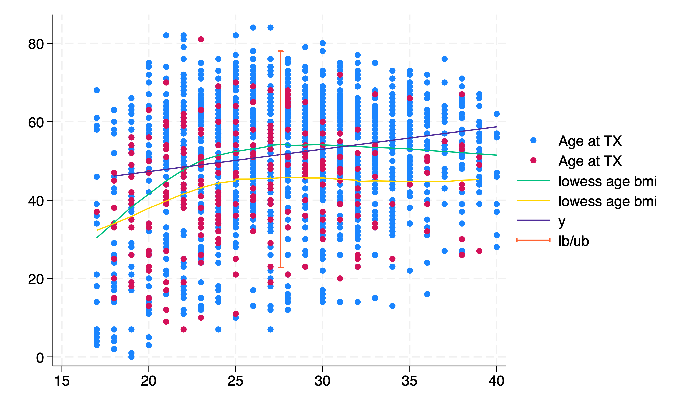
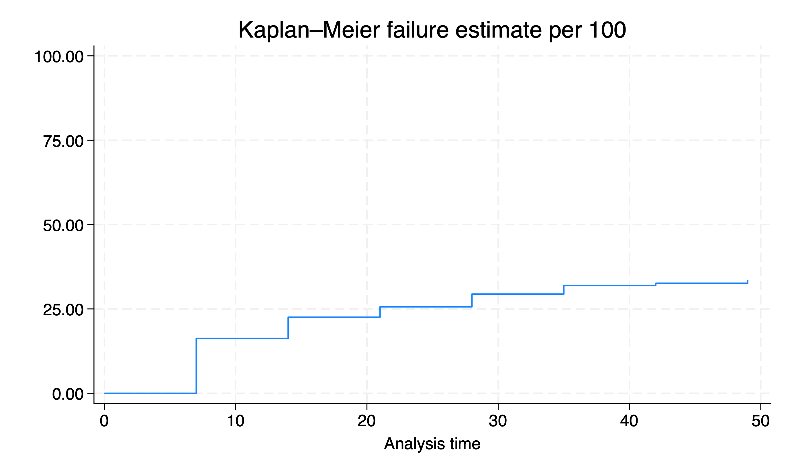

7. Visualizing data in Stata#
global repo https://github.com/jhustata/basic/raw/main/
di "What is your work directory?" _request(workdir)
Our course catalog has several examples to help you visualize data:
Special numeric variables
Dates
Times
Longitudinal data (pending)
Nested data
When data are nested over time
Survival analysis
But let’s kickoff with some basics:
\(Y_i = \beta_0 + \beta_1X_1 + \beta_2X_2 + \cdots + \beta_NX_N + \epsilon_{i.i.d.\sim\mathcal{N}(\mu=0,\sigma=1)}\)
May questions in science take the above form. We often seek to “accurately” predict \(Y_i\) (absolute estimate) or test a hypothesis \(\beta_i=0\) (relative estimate)
7.1 Univariable#
We tend to “explore” the variables one at a time \(Y_i = \beta_0 + \epsilon_{i.i.d.\sim\mathcal{N}(\mu=0,\sigma=1)}\)
cd $workdir
mkdir wk7output
ls wk7output
use "${repo}transplants.dta", clear
Continuous#
hist age
sum age
regress age
graph export wk7output/age_tx.png, replace
ls wk7output

Let’s get fancy:
gen x=1 //dummy or meaningless variable
twoway scatter age x, jitter(15)
graph export wk7output/age_tx_scatter.png, replace
Even fancier!!
use "${repo}transplants", clear
g x=1
sum age
g mean = r(mean)
g lb = r(mean) - 1.96*r(sd)
g ub = r(mean) + 1.96*r(sd)
twoway scatter age x, jitter(15) || scatter mean x || rcap ub lb x
graph export wk7output/age_tx_para.png, replace
Binary#
hist gender
graph export wk7output/gender_bin.png, replace
Is this worth the trouble? or is a simple
tab gendersufficient?Notice there’s no “error” or \(\epsilon_{i.i.d.\sim\mathcal{N}(\mu=0,\sigma=1)}\) with binary variables
And so we also don’t have an “error” with logistic regression
Scatter plots are mostly useful with continuous variables to help visualize \(\epsilon_{i.i.d.\sim\mathcal{N}(\mu=0,\sigma=1)}\)
Multicategory#
hist dx
graph export wk7output/dx_cat.png, replace
We can improve the visual appeal and “impact” of this graph by putting in a little more effort
7.2 Bivariable#
We may then investigate correlations between two variables:
\(Y_i = \beta_0 + \beta_1X_1 + \epsilon_{i.i.d.\sim\mathcal{N}(\mu=0,\sigma=1)}\)
use ${repo}transplants, clear
twoway scatter age bmi || lowess age bmi
graph export wk7output/age_bmi.png, replace
You may even stratify your analysis:
Linearity assumption#
use ${repo}transplants, clear
twoway scatter age bmi if prev==0, ///
|| scatter age bmi if prev==1, ///
|| lfit age bmi if prev==0, ///
|| lfit age bmi if prev==1
graph export wk7output/age_bmi_prev_linear.png, replace

No assumption#
use ${repo}transplants, clear
twoway scatter age bmi if prev==0 ///
|| scatter age bmi if prev==1 ///
|| lowess age bmi if prev==0 ///
|| lowess age bmi if prev==1
graph export wk7output/age_bmi_prev_lowess.png, replace

How do you address the ambiguity in this figure?
7.3 Multivariable#
How would we visualize the real-world scenario below? \(Y_i = \beta_0 + \beta_1X_1 + \beta_2X_2 + \cdots + \beta_NX_N + \epsilon_{i.i.d.\sim\mathcal{N}(\mu=0,\sigma=1)}\)
Simple Linear Regression#
use ${repo}transplants, clear
regress age bmi gender i.race bmi don_ecd wait_yrs peak_pra
local b_0 = _b[_cons]
ereturn list
di e(rmse) //standard error of the multivariable prediction
g se = e(rmse)
sum age
g lb = r(mean) - 1.96*se
g ub = r(mean) + 1.96*se
sum bmi
g mean_bmi = r(mean)
lincom _cons + _b[peak_pra]*5 + _b[wait_yrs]*3 + _b[don_ecd]*1 + _b[bmi]*29 + _b[4.race] + _b[gender]*1
twoway scatter age bmi if prev==0, ///
|| scatter age bmi if prev==1, ///
|| lowess age bmi if prev==0, ///
|| lowess age bmi if prev==1 ///
|| function y = `b_0' + _b[bmi]*x , range(18 40) ///
|| rcap lb ub mean_bmi
graph export wk7output/age_bmi_prev_adj.png, replace

How good (or how bad) is our ability to “predict” age with our multivariable model?
Generalized Linear Regression#
use ${repo}transplants, clear
sum peak_pra,d
g highpra=peak_pra>r(p90)
sum wait_yrs,d
g longwait=wait_yrs>r(p50)
postutil clear
postfile pp xaxis str80 coef double(result lb ub pvalue) using betas.dta, replace
logistic highpra gender prev_ki bmi age wait_yrs don_ecd
local xaxis=1
qui foreach v of varlist gender prev_ki bmi age wait_yrs don_ecd {
lincom `v'
return list
local est: di %3.2f r(estimate)
local lb: di %3.2f r(lb)
local ub: di %3.2f r(ub)
local pval: di %3.2f r(p)
post pp (`xaxis') ("`v'") (`est') (`lb') (`ub') (`pval')
local xaxis=`xaxis' + 1
}
postclose pp
ls -l
use betas,clear
list
#delimit ;
twoway (scatter result xaxis)
(rcap lb ub xaxis,
scale(log)
yline(1,
lc(lime)
lp(dash)
)
legend(off)
xlab(
1 "Gender"
2 "Previous Tx"
3 "BMI"
4 "Age"
5 "Wait y"
6 "ECD"
)
ti("Association between High PRA and select risk factors", pos(11))
yti("OR",
orientation(horizontal)
)
xti("")
)
;
#delimit cr
graph export logistic.png,replace
Spot the Difference!
The log scale is true to the data with equal distances from \(2\) to \(\frac{1}{2}\), \(4\) to \(\frac{1}{4}\), \(8\) to \(\frac{1}{8}\). Otherwise, the scale between \(0\) and \(1\) is artificially “compressed”
use ${repo}transplants, clear
sum peak_pra,d
g highpra=peak_pra>r(p90)
sum wait_yrs,d
g longwait=wait_yrs>r(p50)
postutil clear
postfile pp xaxis str80 coef double(result lb ub pvalue) using betas.dta, replace
logistic highpra gender prev_ki bmi age wait_yrs don_ecd
local xaxis=1
qui foreach v of varlist gender prev_ki bmi age wait_yrs don_ecd {
lincom `v'
return list
local est: di %3.2f r(estimate)
local lb: di %3.2f r(lb)
local ub: di %3.2f r(ub)
local pval: di %3.2f r(p)
post pp (`xaxis') ("`v'") (`est') (`lb') (`ub') (`pval')
local xaxis=`xaxis' + 1
}
postclose pp
ls -l
use betas,clear
foreach v of varlist result lb ub {
replace `v' = log(`v')
}
list
#delimit ;
twoway (scatter result xaxis)
(rcap lb ub xaxis,
scale(log)
yline(0,
lc(lime)
lp(dash)
)
legend(off)
xlab(
1 "Gender"
2 "Previous Tx"
3 "BMI"
4 "Age"
5 "Wait y"
6 "ECD"
)
ylab(
-2.08 "0.125"
-1.39 "0.25"
-0.69 "0.5"
0 "1"
0.69 "2"
1.39 "4"
2.08 "8"
)
ti("Association between High PRA and select risk factors", pos(11))
yti("OR",
orientation(horizontal)
)
xti("")
)
;
#delimit cr
graph export logistic_logscale.png,replace
7.4 Hierarchical#
Last week we briefly talked about nested data. In these data the \(\epsilon_{i.i.d.\sim\mathcal{N}(\mu=0,\sigma=1)}\) in the expressions is “violated”
We assess blood pressure in each one of you during each session of the Stata I (Basic) class:
//ChatGPT wrote this script following a few instructions from me
* I'll indicate with `*` the points I edited for it to work
//Very impressive since this was a first iteration
clear
// Set the number of students and sessions
local nstudents 100
local nsessions 8
// Create an empty dataset
set obs 8
gen student_id = .
gen session = .
gen sbp = .
gen session_date = .
// Loop over each student
forvalues i = 1/`nstudents' {
// Generate data for each session for the current student
forvalues j = 1/`nsessions' {
// Generate student ID
replace student_id = `i'
// Generate session
replace session = `j'
// Generate simulated systolic blood pressure measurements
set seed `i'`j' // Set seed based on student and session
replace sbp = rnormal(120, 10)
// Append data for the current session to the dataset
*append
*ChatGPT included the "append" command with no additional syntax
}
*I inserted this line of code
save wk7output/student`i', replace
}
* ChatGPTs contribution ends at this point
clear
forvalues i=1/`nstudents' {
append using wk7output/student`i'.dta
*Please understand what mess is wrought by blocking this "rm" line of code
*rm wk7output/student`i'.dta
}
* Sort the dataset
sort student_id session
* Display the first few observations
list student_id session sbp in 1/10
* Not what we wanted
bys student_id: replace session=_n
* Let's include the dates
local session_date=d(28mar2024)
forvalues i=1/8 {
replace session_date=`session_date' if session==`i'
local session_date=`session_date' + 7
}
format session_date %td
codebook
replace sbp=round(sbp)
save wk7output/student_pressure, replace
ls wk7output/
count
capture isid student_id
if _rc !=0 {
di `"Observations are nested within "student_id" "'
}
else {
di `"student_id" uniquely identifies observations"'
}
Let’s edit our script in light of the 100 studentN.dta created by the script
7.5 Time#
How may we visualize the change (if any) in blood pressure over time (i.e., the eight-week Stata)?
// Line plot of SBP over the 8-week period
twoway (scatter sbp session_date, sort jitter(9)) ///
, xtitle("Session Date") ytitle("Systolic Blood Pressure") ///
title("Systolic Blood Pressure Over 8 Weeks") legend(off)
graph export wk7output/student_pressure_perweek.png, replace
This only tells us about the class average over time. But says nothing about individual students. Each might have their unique tragectory
7.6 Nested#
// Line plot of SBP for each student over the 8-week period
twoway (connected sbp session_date if student_id==1, msymbol(circle) mcolor(blue)) ///
(connected sbp session_date if student_id==2, msymbol(circle) mcolor(red)) ///
(connected sbp session_date if student_id==100, msymbol(circle) mcolor(magenta)) ///
, xtitle("Session Date") ytitle("Systolic Blood Pressure") ///
title("Individual Trajectories of Systolic Blood Pressure Over 8 Weeks") ///
subti("Student Trajectories Identifiable in Legend") ///
legend(order(1 "Student 1" 2 "Student 2" 100 "Student 100")) ///
yline(120, lcolor(black) lpattern(dash))
graph export wk7output/student_pressure_perweek_notiid.png, replace
mlabel
Scatterplot with marker labels
//from week 1
//code snippet from https://www.stata.com/support/faqs/
//click link above for details
webuse lifeexp, clear
encode country, gen(Country)
twoway scatter lexp Country, xscale(off) mlabel(Country)
graph export wk7output/wk1fig_mlabel.png, replace
Let’s improve the informativeness of this figure:
// Line plot of SBP for each student over the 8-week period
use wk7output/student_pressure.dta, clear
twoway (connected sbp session_date if student_id==1, msymbol(circle) mcolor(blue) mlab(student_id)) ///
(connected sbp session_date if student_id==2, msymbol(circle) mcolor(red) mlab(student_id)) ///
(connected sbp session_date if student_id==100, msymbol(circle) mcolor(magenta) mlab(student_id)) ///
, xtitle("Session Date") ytitle("Systolic Blood Pressure") ///
title("Individual Trajectories of Systolic Blood Pressure Over 8 Weeks") ///
subti("Student Trajectories Identifiable By Marker Labels") ///
legend(off order(1 "Student 1" 2 "Student 2" 100 "Student 100")) ///
yline(120, lcolor(black) lpattern(dash))
graph export wk7output/student_pressure_perweek_notiid_mlabel.png, replace
7.7 Effects#
So what is the “effect” of time on SBP?
Intercept:
_consor \(\beta_0\)Slope:
_beta[var]or \(\beta_i\)
Fixed#
regress sbp session_date
Equivalent to adding a lowess on the figure above
Mixed#
// Create a new dataset with individual student IDs
bysort student_id: gen id = _n
tempfile student_data
save "`student_data'"
// Loop over each student to estimate the regression coefficient
quietly forvalues i = 1/100 {
use "`student_data'", clear
keep if student_id == `i'
regress sbp session_date
scalar beta`i' = _b[session_date]
}
// Display the coefficients
di "Regression Coefficients for Each Student:"
forvalues i = 1/100 {
di "Student `i': " scalar(beta`i')
}
local nstudents = _N
forvalues i = 1/`nstudents' {
label define student_id_labels `i' "student_id`i'", modify
label values student_id student_id_labels
}
Simplify#
Let’s neglect the hierarchical data in a sophisticated way, but retaining some aspects of it:
use wk7output/student_pressure, clear
set seed 340600
g withdraw = rbinomial(1, .1)
sort student_id session_date
list if student_id==1
g withdraw_dt = session_date if withdraw==1
sum session_date
//replace withdraw_dt = r(max)
format withdraw_dt %td
list if student==1
by student_id: egen end = min(withdraw_dt)
format end %td
tab end, mi
sum session_date
replace end=r(max) if missing(end)
tab end, mi
by student_id: egen begin = min(session_date)
format begin %td
list if student==1
by student_id: replace withdraw = 1 if withdraw[_n-1]==1
list if student_id==1
stset end, fail(withdraw) enter(begin) origin(begin)
sts graph, fail per(100) //there's a bug
graph export wk7output/class_attrition.png, replace
list in 1/10
capture isid student_id
if _rc !=0 {
di "These data are nested and each student has several records"
}
else {
di "There's only a single record per student"
}
egen representation = tag(student_id)
l in 1/10
keep if representation==1
count
capture isid student_id
if _rc !=0 {
di "These data are nested and each student has several records"
}
else {
di "There's only a single record per student"
}

Prescriptions#
* Import data from URL
import delimited "https://github.com/jhustata/lab6.md/raw/main/stsrpos.csv", clear
* Convert srvc_dt to date format
gen srvc_dt_date = date(srvc_dt, "DMY")
* Create year_month variable
format srvc_dt_date %tm
gen year_month = month(srvc_dt_date)
* Count prescriptions by month
table year_month,
* Create bar chart for number of prescriptions by month
graph bar (count), over(year_month) title("Number of Prescriptions by Month") ///
ytitle("Number of Prescriptions") //xtitle("Year-Month")
* Calculate the top 10 most prescribed medications
preserve
bys gnn: g top_meds=_N
egen grouptag=tag(gnn)
keep if grouptag==1
gsort -top_meds
l in 1/10
* Create bar chart for top 10 most prescribed medications
encode gnn, gen(Gnn)
keep in 1/10
g x=_n
levelsof Gnn
list Gnn
local varlab: var lab Gnn
local vallab: value label Gnn
levelsof Gnn, local(numlevels)
local i=1
foreach l of numlist `numlevels' {
local vallab: value label Gnn
local catlab: lab `vallab' `l'
global xlab`i' = "`catlab'"
local i= `i' + 1
}
global ylab
twoway bar top_meds x, ///
horizontal ///
ytitle("Medication") ///
xtitle("Number of Prescriptions") ///
title("Top 10 Most Prescribed Medications") ///
ylab(0(1)10 ///
1 "$xlab1" ///
2 "$xlab2" ///
3 "$xlab3" ///
4 "$xlab4" ///
5 "$xlab5" ///
6 "$xlab6" ///
7 "$xlab7" ///
8 "$xlab8" ///
9 "$xlab9" ///
10 "$xlab10")
graph export wk7output/prescriptions.png, replace
restore
/*
* Calculate number of unique patients and number of prescriptions
egen idtag=tag(usrds_id)
count if idtag
egen gnntag = tag(gnn)
count if gnntag
* Descriptive statistics for prescriptions per patient
bys usrds_id: g pillcount=_N
hist pillcount
sum pillcount, de
gen polypharm=pillcount>=3
* Identify patients with 3 or more prescriptions
egen prescriptions_per_patient = count(usrds_id), by(usrds_id)
compare pillcount prescriptions_per_patient
gen patients_with_3_plus = prescriptions_per_patient >= 3
compare polypharm patients_with_3_plus
* Subset dataset for patients with 3 or more prescriptions
keep if patients_with_3_plus
* Identify and display prescriptions over time for selected patients
levelsof usrds_id, local(selected_patients)
foreach patient_id in `selected_patients' {
keep if usrds_id == `patient_id'
count
local count=r(N)
twoway bar `count' year_month
graph bar (`count'), over(year_month) ///
title("Patient `patient_id': Prescriptions Over Time") ///
ytitle("Number of Prescriptions") xtitle("Year-Month")
* Fit the mixed-effects model
xtmixed usrds_id i.year_month, mle
*/
capture log close
log using wk7output/prescriptions.log, replace
sort sort usrds_id srvc_dt
list in 1/10
log close
name: <unnamed>
log: /Users/d/Documents/GitHub/stataone/wk7output/prescriptions.log
log type: text
opened on: 9 May 2024, 11:15:11
. sort usrds_id srvc_dt
. list usrds_id gnn srvc_dt in 1/15
+------------------------------------------------------+
| usrds_id gnn srvc_dt |
|------------------------------------------------------|
1. | 0 FEBUXOSTAT 11oct2024 |
2. | 1 CYCLOBENZAPRINE HCL 15jun2024 |
3. | 7 LEVOTHYROXINE SODIUM 18feb2024 |
4. | 12 INSULIN ASPART 17nov2024 |
5. | 15 HYDROCODONE/ACETAMINOPHEN 14jan2024 |
|------------------------------------------------------|
6. | 23 CARVEDILOL 28apr2024 |
7. | 28 FLUOXETINE HCL 17aug2024 |
8. | 40 WARFARIN SODIUM 03apr2024 |
9. | 47 PREDNISONE 04oct2024 |
10. | 47 GABAPENTIN 14jul2024 |
|------------------------------------------------------|
11. | 47 SEVELAMER HCL 24aug2024 |
12. | 49 SIMVASTATIN 24jul2024 |
13. | 50 LEVOTHYROXINE SODIUM 17apr2024 |
14. | 60 SULFAMETHOXAZOLE/TRIMETHOPRIM 09may2024 |
15. | 64 TAMSULOSIN HCL 04aug2024 |
+------------------------------------------------------+
. log close
name: <unnamed>
log: /Users/d/Documents/GitHub/stataone/wk7output/prescriptions.log
log type: text
closed on: 9 May 2024, 11:15:11
The above can be thought of us being nested within diagnostic groups. If you reproduced the above figure for each diagnostic group (e.g. end-stage renal disease, stroke, diabetes), the relative rankings by frequency of usage are likely to change.
It’s a simple reminder that data are always nested or hierarchical, but that we often overlook these multilevels in our models and inferencesl It’s a reflectoin, not on your rigor, but on the dominance of epidemiology in the curriculum (i.e., the obsession with bias and controlling for it).
But when you wish to look at reality in the truest way, the concern then is variance within a level (e.g. a person or patient) as compared with variance between levels (e.g. persons or groups). The intra-class correlation coefficient (ICC) captures this and is a powerful way to “explain” variation in data rather than “control” variation in estimates.
As mentioned last week, these matters are way beyond the scope of this class and perhaps even beyond the scope of your degree program. Our purpose here is to equip you with some basic Stata queries that help you describe groups (e.g. a person) as well as individuals nested within those groups (e.g. person-time)
7.8 Lab#
Practice examples to prepare you for your final homework can be found here
7.9 Homework#
Your final homework is here